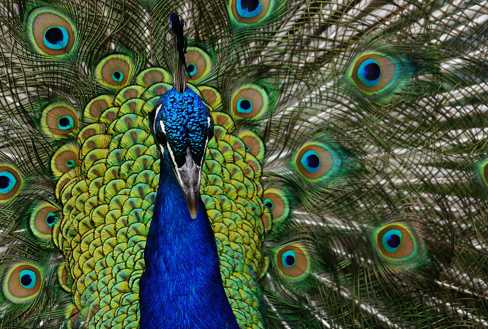

Peafowls
Home
Lions

Peafowls are majestic creatures. Besides the vividly colored feathers, they....
live in an open lowland forest.
Their food source includes snakes.
and they fly! Not far, but still...